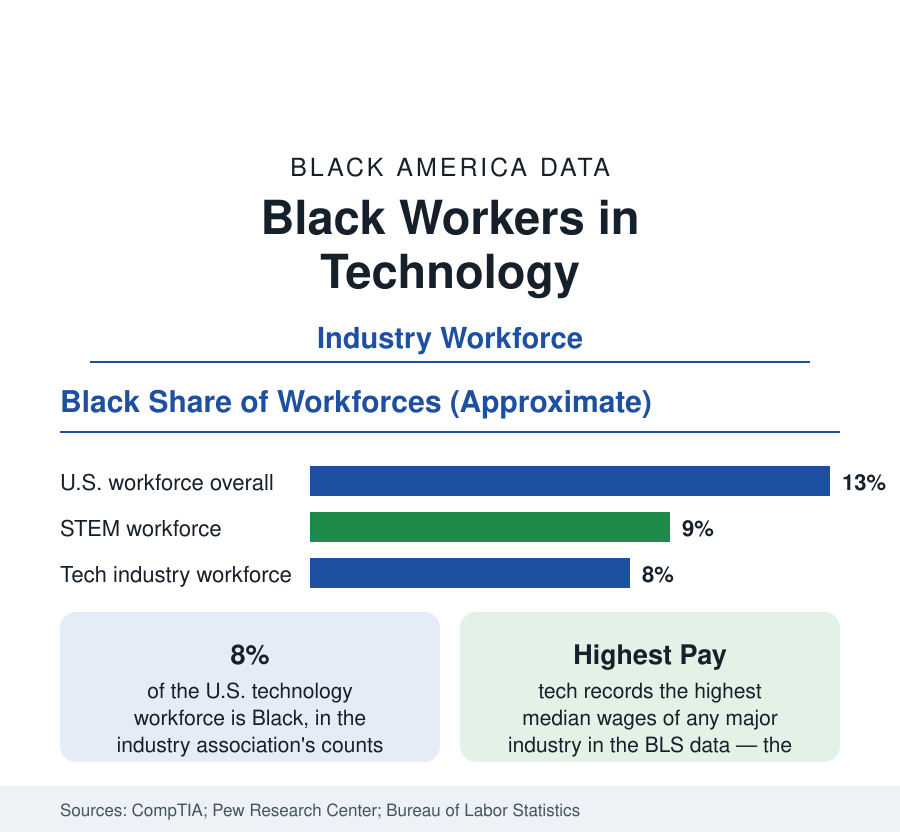

Black Employment
Black Workers in Technology: Eight Percent of the Defining Industry
Black workers hold about 8 percent of U.S. technology jobs — and a smaller share of the technical roles at the largest firms. The workforce data.

Black workers hold about 8 percent of the technology jobs in the United States, in the industry association CompTIA's annual workforce accounting — against 13.5 percent of the population and about 9 percent of the broader STEM workforce in the Pew Research Center's analyses. The gap matters out of proportion to its size because technology is the economy's highest-wage large industry and its defining growth sector: the occupation data of this section's other articles describe where Black workers are; this one describes the industry where they most are not. This article reports the tech workforce data.
The Layers of the Gap
The 8 percent is itself a composite of layers at different levels. Across the whole tech workforce — including sales, support, and administrative roles at tech companies and technical roles in every industry — the Black share is about 8 percent. In core technical roles (software development, systems, data, engineering) it runs lower. At the largest technology firms, the company diversity reports — published annually for a decade — record Black employees at roughly 4 to 6 percent of U.S. staff overall and typically 3 to 5 percent of technical staff, with leadership shares lower still, though all of these figures have risen from lower bases since reporting began. In venture-backed startups, founder and employee shares run below even those figures, connecting this article to the venture-capital data of the business section.
The Pipeline Numbers
The education pipeline supplies part, not all, of the explanation. Black students earn roughly 8 to 9 percent of bachelor's degrees in computer science and a smaller share in electrical and computer engineering in the federal completions data — below the population share but above the technical-workforce share, a discrepancy the hiring literature examines through the audit and referral channels: technology hiring runs heavily on employee referrals and elite-institution pipelines, both of which transmit existing composition forward. The HBCU contribution is disproportionate in the way this reference keeps recording: the top HBCU computer science programs feed the large firms' diversity recruiting at rates their size cannot explain, and the firms' published partnerships with HBCUs and Black professional organizations (the National Society of Black Engineers, with tens of thousands of members, chief among them) are the industry's structural response.
Geography: Where Black Tech Works
The metro distribution departs from the industry's coastal image. Atlanta records one of the highest Black shares of any major tech hub in the metro analyses — a Black tech workforce in the tens of thousands built on the HBCU cluster, the region's corporate IT sector, and deliberate ecosystem building — followed by Washington (the federal IT economy), Charlotte, Houston, and Dallas. The Bay Area and Seattle, the industry's centers of gravity, record the lowest Black shares of the major hubs. Remote work's expansion registered in the survey data as a dispersal force, with Black tech workers' location choices shifting measurably toward the Southern metros in the post-2020 data.
Pay and the Seniority Ceiling
Within the industry, the compensation data show the familiar compounding: Black tech workers' median pay trails the industry median, reflecting role mix (fewer in the highest-paid engineering and product tiers), level distribution (fewer at senior and staff levels in the platform-reported data), and company mix. The seniority distribution is the series to watch in the workforce reports: representation at entry levels has approached the degree share in recent hiring cohorts at several large firms, while the senior and executive tiers — set by the cohorts of a decade ago and by attrition differentials in the retention surveys — move slowly. The layoff cycles of the industry's contraction years fell measurably on the most recent diversity gains in the workforce trackers' analyses, resetting part of the entry-level progress.
Reading the Tech Data
Technology is the employment section's clearest case of an industry whose future composition is being decided now: the degree pipeline at 8 to 9 percent, entry hiring near it at the best-documented firms, senior tiers at half of it, and a geography tilting toward the metros where Black professional life is deepest. The industry's wage premium makes each point of share worth more, in aggregate Black income, than a point almost anywhere else in these tables.
More in Black Employment
The Black Unemployment Rate: The Two-to-One Pattern
Black unemployment runs at roughly twice the White rate — 5.5 percent against 3.3 percent in annual averages — a ratio stable across five decades of federal data. How it is measured and why it persists.
Black Median Weekly Earnings: The 80-Cent Ratio
Black full-time workers earn a median of about $900 a week — roughly 80 cents for every dollar White workers earn. The BLS earnings data by group, gender, and occupation.
Black Labor Force Participation: Working at National Rates
Black labor force participation runs at roughly the national rate — and Black women participate at higher rates than White women. The BLS participation data.
Source: CompTIA, State of the Tech Workforce; Pew Research Center STEM workforce analyses; company diversity reports; U.S. Bureau of Labor Statistics.